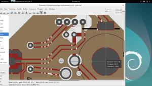

Summary
|
|
is a free/open source, flexible, modular Printed Circuit Board editor
for designing professional and hobby boards.
is feature-rich and compatible
has a long history, fast paced development, and big plans.
is part of the coralEDA ecosystem.
|
|---|
| Version Control | svn://repo.hu/pcb-rnd/trunk (mirrors)
|
|---|
| Download | source releases
|
|---|
| Comments, feedback, patches | live chat with the developer
or contact the lead developer
Mailing list: pcb-rnd  list.repo.hu (send a mail with subject: subscribe) (archives) list.repo.hu (send a mail with subject: subscribe) (archives)
|
|---|
| Contribution and support |
How to join or contribute
We are looking for help and sponsoration/donation.
Do you have a feature request?
|
|---|
| Key features |
editor for multilayer Printed Circuit Boards
scriptable in 10+ different scripting languages
parametric footprint generation, web footprints
modular code with a flexible plugin system
fits well in a UNIXy workflow
supports CLI and server applications
active development, frequent releases
friendly and efficient developer and user community
predictable development cycles
compatible with KiCad and gEDA/PCB, understands Eagle and Protel/Autotrax file formats
|
|---|
| Supported platforms |
Linux desktop (various distributions, from source)
official packages in Debian, Ubuntu, Fedora and Mageia
Arch Linux (user package)
Mac OS X
IRIX 5.3
OpenBSD
(Likely: any 90's UNIX system with motif)
Screen resolution as small as 800x600
GUI options: motif/lesstif, gtk-gdk, gtk-gl
|
|

|
|
|---|
|
|
What is -rnd?
| RespoNsive Developers
| Developers try to respond on user needs, adding features that are actually needed by current users.
|
|
Response Not Delayed
| Bugreports, user requests and patches submitted are answered ASAP. There are no patches bitrotting for months. There are no forgotten bugreports.
|
Research
&
Development
Rázós,
Nehéz
Döntések
(Brave, hard decisions)
| There is a constant experimentation with new features and directions. We are willing to try strange/unusual ideas without risking the stability of the daily workflow.
|
Rants
Now
Dissipating
| Instead of talking and ranting a lot about what could work better, we just sit down and make it work better.
|
Rather
Nicely
Decentralized
| Slim, generic core; most of the code organized in replacable plugins. Most plugins depend only on the core.
|
|
{kind=link}